5 Other types of questions
5.1 Dropdown lists
A dropdown list is an alternative way of presenting answer options that can be useful when you have a lot of options that would otherwise take up a lot of screen space. They have a disadvantage, in that the participant has to click and drag to the right answer rather than just click, so some people find them harder to use. Avoid dropdown lists if space is not an issue.
Change Sex into a dropdown list by editing it and changing the Question type from List (radio) to List (dropdown).
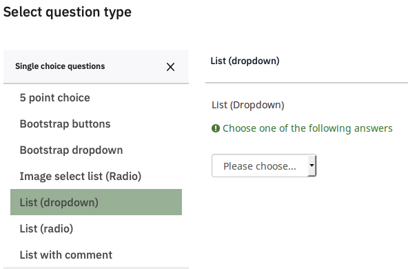 s
5.3 Multiple Answer Questions
Single answer lists have round ‘radio buttons’ that toggle on and then off if people press another one. If you ask people whether they had cornflakes or toast for breakfast, and they had both, they may be frustrated with your survey.
Make a new group ‘Questions’, set its Condition to Consent==“Y” and click Save.
Add a new question Breakfast which asks ‘What did you have for breakfast’, and under Question Type click Multiple choice questions, and select Multiple Choice.
We will add several items that you might have for breakfast. Instead of adding them one at a time, click Quick add. Then add some things they might have had.
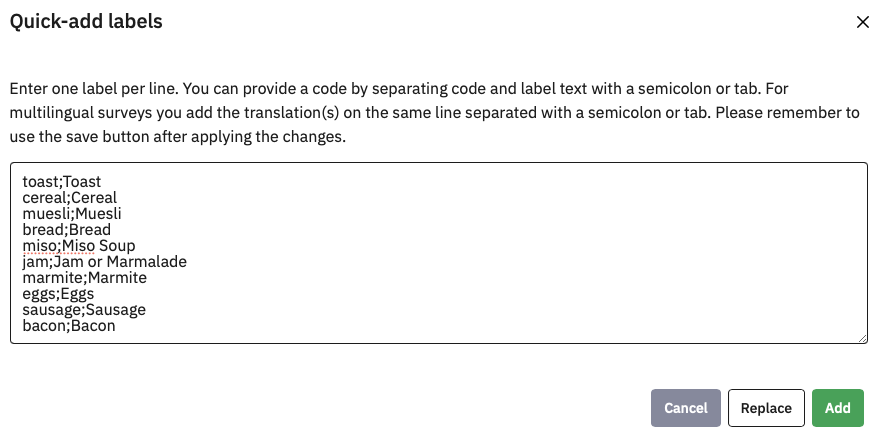
As the help information says, here we are naming the option as well as entering the text to display, separating them with a semicolon (no spaces). When you click Add, they will all be filled in for you.
Notice that we still have the example row though – Add will Add to the existing options. If you had clicked Replace, it would have replaced them. You can remove the example by clicking
Click Save and preview the question.
This format uses checkboxes which show ticks if selected:
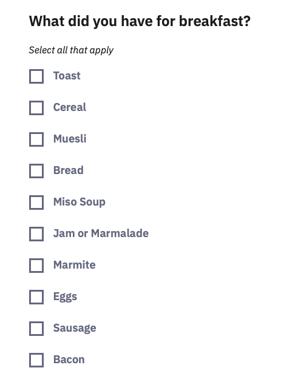
Ten items take up a lot of space, so you could format them in columns – under Display, set Display columns to 3. Save and preview!
Radio buttons and checkboxes are universally used conventions in computer interface design, so you should not need to add explanatory text.
From a data point of view, each option becomes a separate yes/no question, so the data file becomes correspondingly larger, and you should use these sparingly.
5.4 Likert Rating Scales
Most questionnaires will use some form of rating scale, where people have to select one of several ordinal responses. Common examples are Likert-type scales, such as:
Strongly Disagree – Disagree – Neither – Agree – Strongly Agree
Not at all like me – somewhat like me – very like me
0 (not at all) – 1 – 2 – 3 – 4 – 5 – 6 – 7 – 8 – 9 – 10 (Constantly)
These can be thought of as horizontal single choice questions, and there are a variety of Array question types for them, but the basic Array is suitable for most cases.
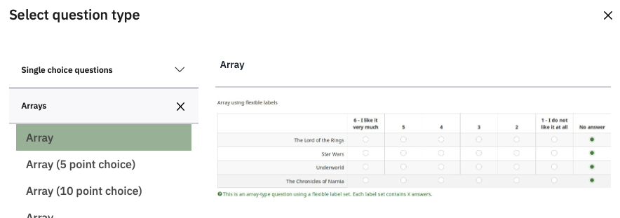
Add a question, and select the Array question type. Name the question Foods, set the Question to ‘How much do you like…’ and use Quick add to create (and name) five subquestions.
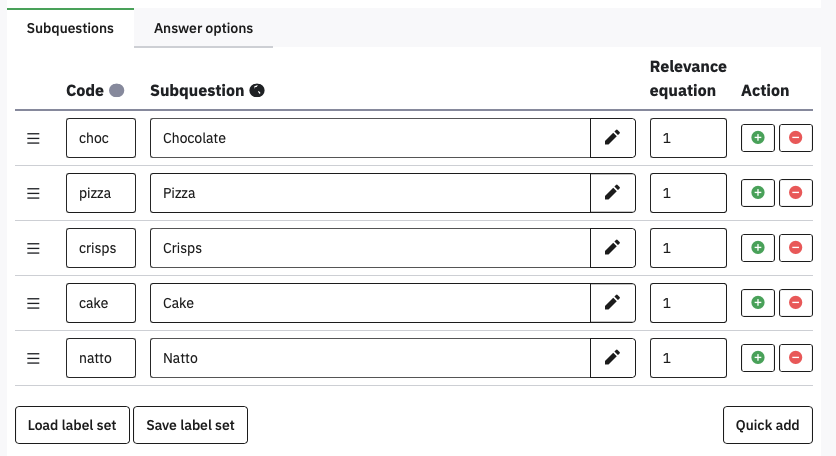
Did you remember to avoid a space between the code, semicolon, and Subquestion text? If you didn’t, please edit the spaces out before proceeding.
Whenever you have several consecutive items using the same answer scale then they can be presented as a matrix to make them easier to answer and use less screen space.
Click Answer options to define a 5 point Likert response scale, with the Codes 0 to 4 (you can use Quick add).
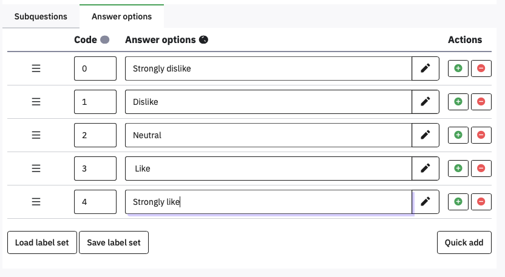
Using numbers for the codes here can make scoring the data easier later. Once again, make sure there are no spaces after the numbers or before the Answer options. Save and preview!
If you are writing a lot of surveys, you can save a frequently used scale like this by clicking Save label set. You can then reload it later using Load label set.
5.5 Semantic Differential questions
Semantic differential questions are those where you put an adjective on the left and its opposite on the right, and so rate the same statement on several dimensions.
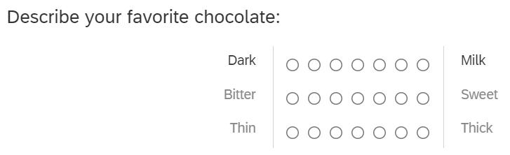
In Limesurvey this is just an Array, but you put the left and right labels in the Subquestion text, separated by the vertical bar character | . The | might take you some time to locate on your keyboard, but it should be there.
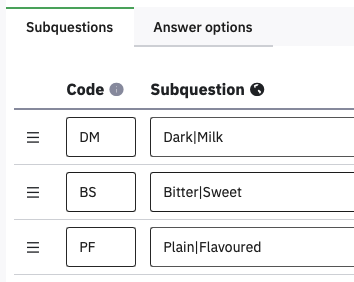
For the answer options, on separate lines type the values 0 to 10 (for the Codes) followed by a semicolon, and nothing else.
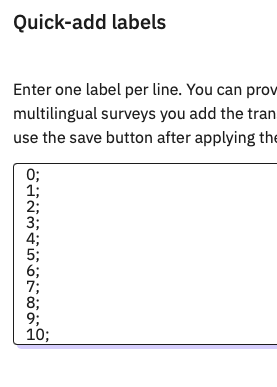
You should end up with an unlabelled semantic differential like this:
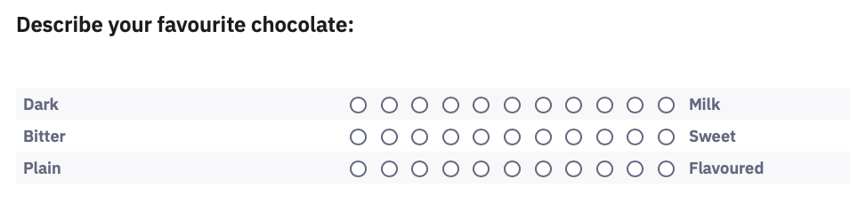
The alignment of the left hand side is not great; it needs to be right-aligned. We can fix this by adding HTML tags to the subquestion text.
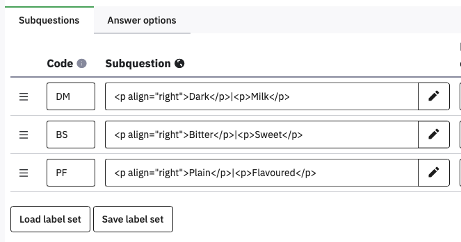
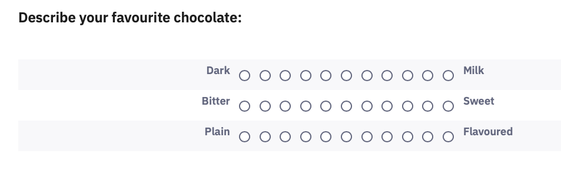
5.6 Continuous Sliders
An alternative to discrete ordinal Likert scales, sliders provide a continuous rating between two values, a bit like the ‘visual analogue scales’ used in physical questionnaires. These are hidden away under the Mask question type Multiple numerical input.
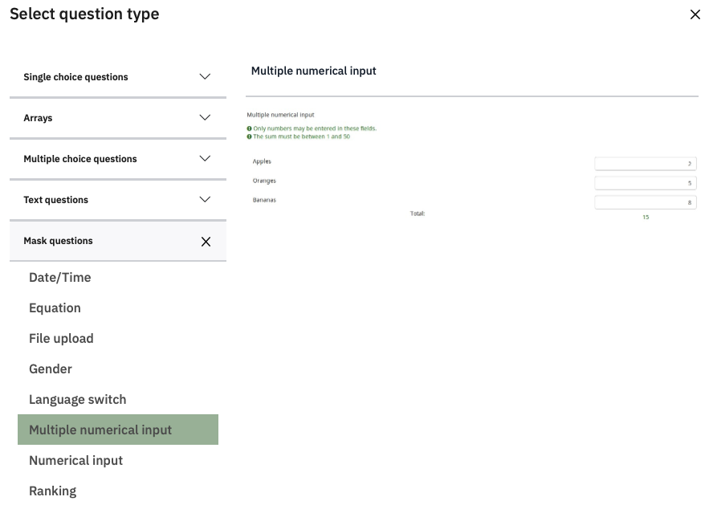
Create a Multiple numerical input question called Slider, with the question ‘How much would you pay for…’ and the Subquestion ‘…a bar of chocolate?’
To make it a slider, open the bottom option on the right hand menu, Slider. Set Use slider layout to On. Set the minimum value to 0, the maximum to 100, and the accuracy to 1. Turn On the Display slider min and max value.
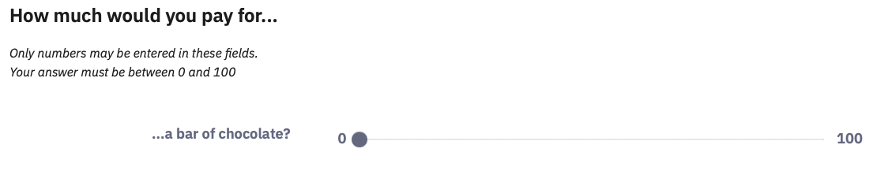 s
You can now add more items as different subquestions
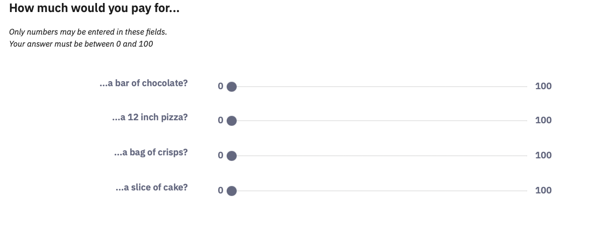
5.7 Duplicating questions
Often your surveys will consist of lots of similar questions. You can save time by getting one question exactly the way you want it, and then duplicating it, so all you have to do is edit the content.
For example, the Slider question had a lot of settings which would take time to replicate. If you wanted to ask a slightly different question using a slider, you could replicate it and just change the question text.
Hover over the Slider question and click the three dots that appear to the right, and select Copy to duplicate it.
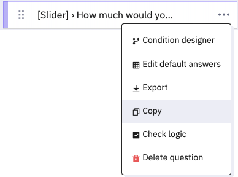
Notice that you have options about what to copy over. Leave them all as Yes, and click Save and close. Edit the SliderCopy question and change the question to ‘How long would it take you to eat…’.